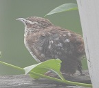

Hi, everyone,
Mark and I hope that you have been able to stay safely distanced and healthy this year, and wish you the best for the coming year.
As was also true for everyone, the year 2020 was not at all what we had planned or hoped. We were both on sabbatical in the spring semester, with plans to travel to Australia, Europe, and around the US - for work and for play - that were canceled. But also over the course of the year we grew much closer with our families in this new era in which it's just as easy to visit a sibling in another state as a friend across the street over Zoom.
My mother passed away in February. Mark and I, my brothers and sisters-in-law, my first cousin Carol and her family, several of Mom's college friends, my best friend from high school Christine, my high school English teacher, and other friends of the family all came together for the visitation and funeral, which was wonderful support. My mother was an artist all of her life, creating her own crafts and in particular banners with motivational messages (or logos of sports teams!). She also created artwork with needlepoint, drawing, and plastics.
|
|

|
In the fall semester Mark and I both decided to do all of our work remotely. Teaching online (over Zoom) for the first time required a lot of extra work to create new materials, use new technology, keep the students engaged, etc. The learning curve was quite steep and kept us hopping. Mark and I also gave talks in our first online research conference in September, giving us the opportunity to catch up with several research colleagues we haven't seen for quite a few years. One of the silver linings of this pandemic year is that talks in research conferences and seminars worldwide are now available to us at home; in some ways that has made keeping up with what is happening in our research areas easier than usual this year, and I hope that many online seminars and conferences will continue to run after we can safely return to traveling.
In this year of not traveling, our photograph collection involves a lot of nature ...
... in our back yard, including three baby birds - robin, Carolina wren, and cardinal - and a fox! ...
|  |
... and on a few walks along country roads next to Lincoln, including more baby birds - hooded merganser, cedar waxwing, eastern bluebird, and red-headed woodpecker - ...
... beautiful prairie flowers - purple coneflower, snow on the mountain, and black-eyed susans - ...
... and other neat creatures in the prairie:
Happy holidays and new year to all of you! Mark and I wish you the best for 2021.
Susan